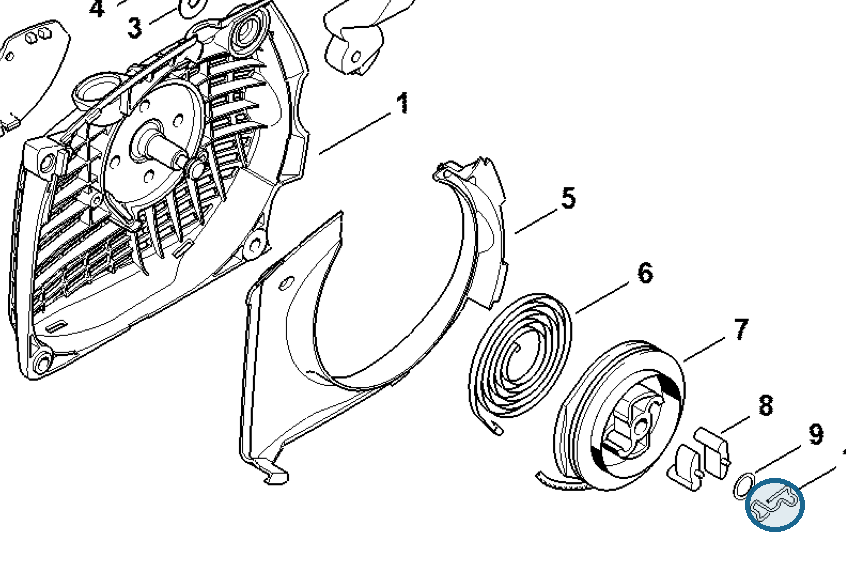
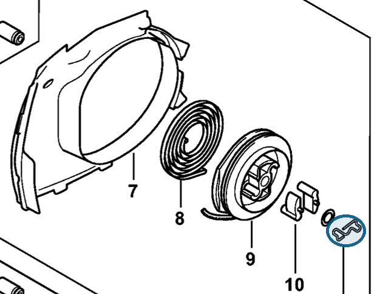

Spring
1128 195 3500
MS 261 — rewind starter
Pawl-retaining spring in fan housing 1141 080 2104 (item 10).
Item 10 Qty listed: 1

MS 261 C-M spare-parts list, 10/02/2023. Drawing p. 19; parts table p. 20.
MS 462 — rewind starter
Pawl-retaining spring in fan housing 1142 080 2102 (item 12).
Item 12 Qty listed: 1

MS 462 C-M Z spare-parts list, 10/29/2024. Drawing p. 21; parts table p. 22.